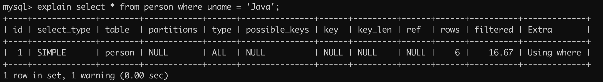
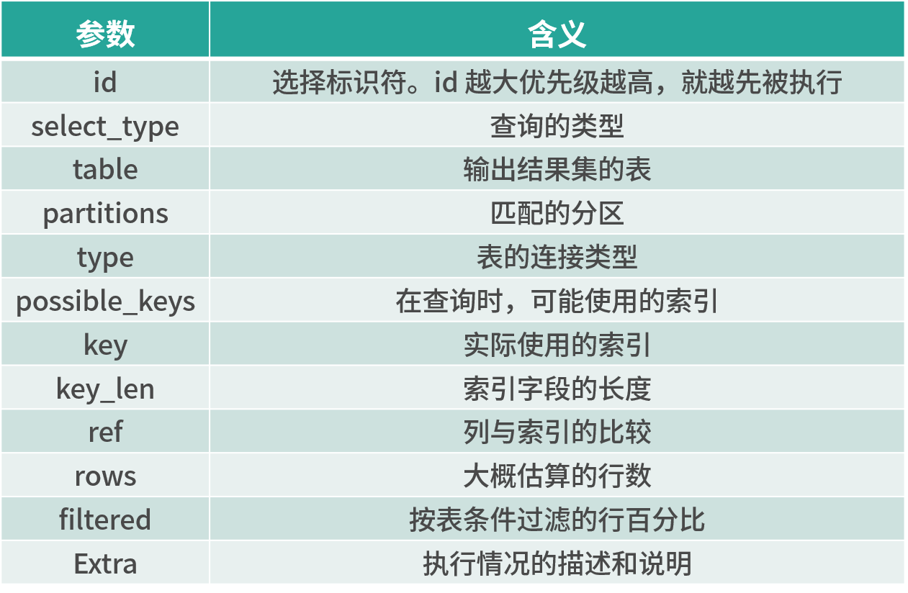
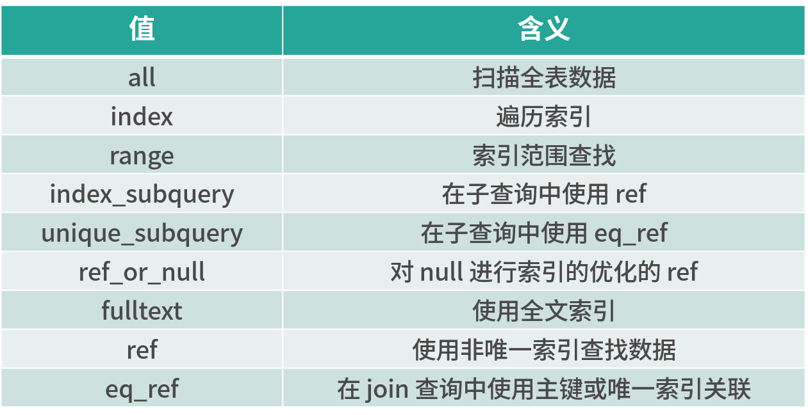

性能优化（Optimize）指的是在保证系统正确性的前提下，能够更快速响应请求的一种手段。而且有些性能问题，比如慢查询等，如果积累到一定的程度或者是遇到急速上升的并发请求之后，会导致严重的后果，轻则造成服务繁忙，重则导致应用不可用。它对我们来说就像一颗即将被引爆的定时炸弹一样，时刻威胁着我们。因此在上线项目之前需要严格的把关，以确保 MySQL 能够以最优的状态进行运行。同时，在实际工作中还有面试中关于 MySQL 优化的知识点，都是面试官考察的重点内容。
我们本课时的面试题是，MySQL 的优化方案有哪些？
典型回答
MySQL 数据库常见的优化手段分为三个层面：SQL 和索引优化、数据库结构优化、系统硬件优化等，然而每个大的方向中又包含多个小的优化点，下面我们具体来看看。
1.SQL 和索引优化
此优化方案指的是通过优化 SQL 语句以及索引来提高 MySQL 数据库的运行效率，具体内容如下。
① 使用正确的索引
索引是数据库中最重要的概念之一，也是提高数据库性能最有效的手段之一，它的诞生本身就是为了提高数据查询效率的，就像字典的目录一样，通过目录可以很快找到相关的内容，如下图所示：
假如我们没有添加索引，那么在查询时就会触发全表扫描，因此查询的数据就会很多，并且查询效率会很低，为了提高查询的性能，我们就需要给最常使用的查询字段上，添加相应的索引，这样才能提高查询的性能。
小贴士：我们应该尽可能的使用主键查询，而非其他索引查询，因为主键查询不会触发回表查询，因此节省了一部分时间，变相的提高了查询的性能。
在 MySQL 5.0 之前的版本要尽量避免使用 or 查询，可以使用 union 或者子查询来替代，因为早期的 MySQL 版本使用 or 查询可能会导致索引失效，在 MySQL 5.0 之后的版本中引入了索引合并，简单来说就是把多条件查询，比如 or 或 and 查询的结果集进行合并交集或并集的功能，因此就不会导致索引失效的问题了。
避免在 where 查询条件中使用 != 或者 <> 操作符，因为这些操作符会导致查询引擎放弃索引而进行全表扫描。
适当使用前缀索引，MySQL 是支持前缀索引的，也就是说我们可以定义字符串的一部分来作为索引。我们知道索引越长占用的磁盘空间就越大，那么在相同数据页中能放下的索引值也就越少，这就意味着搜索索引需要的查询时间也就越长，进而查询的效率就会降低，所以我们可以适当的选择使用前缀索引，以减少空间的占用和提高查询效率。比如，邮箱的后缀都是固定的“@xxx.com”，那么类似这种后面几位为固定值的字段就非常适合定义为前缀索引。
② 查询具体的字段而非全部字段
要尽量避免使用 select *，而是查询需要的字段，这样可以提升速度，以及减少网络传输的带宽压力。
③ 优化子查询
尽量使用 Join 语句来替代子查询，因为子查询是嵌套查询，而嵌套查询会新创建一张临时表，而临时表的创建与销毁会占用一定的系统资源以及花费一定的时间，但 Join 语句并不会创建临时表，因此性能会更高。
④ 注意查询结果集
我们要尽量使用小表驱动大表的方式进行查询，也就是如果 B 表的数据小于 A 表的数据，那执行的顺序就是先查 B 表再查 A 表，具体查询语句如下：
1 | select name from A where id in (select id from B); |
⑤ 不要在列上进行运算操作
不要在列字段上进行算术运算或其他表达式运算，否则可能会导致查询引擎无法正确使用索引，从而影响了查询的效率。
⑥ 适当增加冗余字段
增加冗余字段可以减少大量的连表查询，因为多张表的连表查询性能很低，所有可以适当的增加冗余字段，以减少多张表的关联查询，这是以空间换时间的优化策略。
2.数据库结构优化
① 最小数据长度
一般说来数据库的表越小，那么它的查询速度就越快，因此为了提高表的效率，应该将表的字段设置的尽可能小，比如身份证号，可以设置为 char(18) 就不要设置为 varchar(18)。
② 使用最简单数据类型
能使用 int 类型就不要使用 varchar 类型，因为 int 类型比 varchar 类型的查询效率更高。
③ 尽量少定义 text 类型
text 类型的查询效率很低，如果必须要使用 text 定义字段，可以把此字段分离成子表，需要查询此字段时使用联合查询，这样可以提高主表的查询效率。
④ 适当分表、分库策略
分表和分库方案也是我们经常说的垂直分隔（分表）和水平分隔（分库）。
分表是指当一张表中的字段更多时，可以尝试将一张大表拆分为多张子表，把使用比较高频的主信息放入主表中，其他的放入子表，这样我们大部分查询只需要查询字段更少的主表就可以完成了，从而有效的提高了查询的效率。
分库是指将一个数据库分为多个数据库。比如我们把一个数据库拆分为了多个数据库，一个主数据库用于写入和修改数据，其他的用于同步主数据并提供给客户端查询，这样就把一个库的读和写的压力，分摊给了多个库，从而提高了数据库整体的运行效率。
3.硬件优化
MySQL 对硬件的要求主要体现在三个方面：磁盘、网络和内存。
① 磁盘
磁盘应该尽量使用有高性能读写能力的磁盘，比如固态硬盘，这样就可以减少 I/O 运行的时间，从而提高了 MySQL 整体的运行效率。
磁盘也可以尽量使用多个小磁盘而不是一个大磁盘，因为磁盘的转速是固定的，有多个小磁盘就相当于拥有多个并行运行的磁盘一样。
② 网络
保证网络带宽的通畅（低延迟）以及够大的网络带宽是 MySQL 正常运行的基本条件，如果条件允许的话也可以设置多个网卡，以提高网络高峰期 MySQL 服务器的运行效率。
③ 内存
MySQL 服务器的内存越大，那么存储和缓存的信息也就越多，而内存的性能是非常高的，从而提高了整个 MySQL 的运行效率。
考点分析
MySQL 性能优化的方案很多，因此它可以全面考察的一个程序员的经验是否丰富。当然这个问题的回答也是可深可浅，不同的岗位对此问题的答案要求也是不同的，这个问题也可以引申出更多的面试问题，比如：
- 联合索引需要注意什么问题？
- 如何排查慢查询？
知识扩展
正确使用联合索引
使用了 B+ 树的 MySQL 数据库引擎，比如 InnoDB 引擎，在每次查询复合字段时是从左往右匹配数据的，因此在创建联合索引的时候需要注意索引创建的顺序。例如，我们创建了一个联合索引是 idx(name,age,sex)，那么当我们使用，姓名+年龄+性别、姓名+年龄、年龄+性别等这种从左往右顺序查询的条件时，就会触发联合索引进行查询；然而如果使用年龄+姓名这种非从左边往右边匹配的组合查询条件，就不能使用此联合索引进行查询了。
当然，当我们已经有了（name,age）这个联合索引之后，一般情况下就不需要在 name 字段单独创建索引了，这样就可以少维护一个索引。
慢查询
慢查询通常的排查手段是先使用慢查询日志功能，查询出比较慢的 SQL 语句，然后再通过 explain 来查询 SQL 语句的执行计划，最后分析并定位出问题的根源，再进行处理。
慢查询日志指的是在 MySQL 中可以通过配置来开启慢查询日志的记录功能，超过 long_query_time 值的 SQL 将会被记录在日志中。我们可以通过设置“slow_query_log=1”来开启慢查询，它的开启方式有两种：
- 通过 MySQL 命令行的模式进行开启，只需要执行“set global slow_query_log=1”即可，然而这种配置模式再重启 MySQL 服务之后就会失效；
- 另一种方式可通过修改 MySQL 配置文件的方式进行开启，我们需要配置 my.cnf 中的“slow_query_log=1”即可，并且可以通过设置“slow_query_log_file=/tmp/mysql_slow.log”来配置慢查询日志的存储目录，但这种方式配置完成之后需要重启 MySQL 服务器才可生效。
需要注意的是，在开启慢日志功能之后，会对 MySQL 的性能造成一定的影响，因此在生产环境中要慎用此功能。
explain 执行计划的使用示例 SQL 如下：
1 | explain select * from person where uname = 'Java'; |
它的执行结果如下图所示：

摘要说明如下表所示：

以上字段中最重要的就是 type 字段，它的所有值如下所示：

当 type 为 all 时，则表示全表扫描，因此效率会比较低，此时需要查看一下为什么会造成此种原因，是没有创建索引还是索引创建的有问题？以此来优化整个 MySQL 运行的速度。
小结
本课时我们从三个维度讲了 MySQL 的优化手段：SQL 和索引优化、数据库结构优化以及系统硬件优化等；同时深入到每个维度中，详细地介绍了 MySQL 具体的优化细节；最后我们讲了联合索引的最左匹配原则，以及慢查询的具体解决方案。